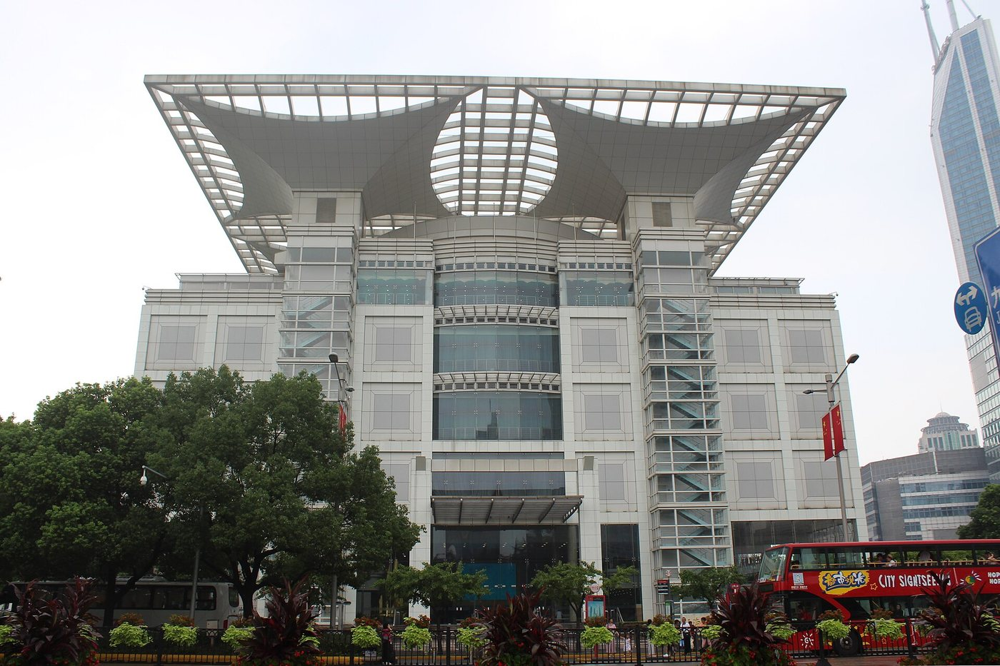
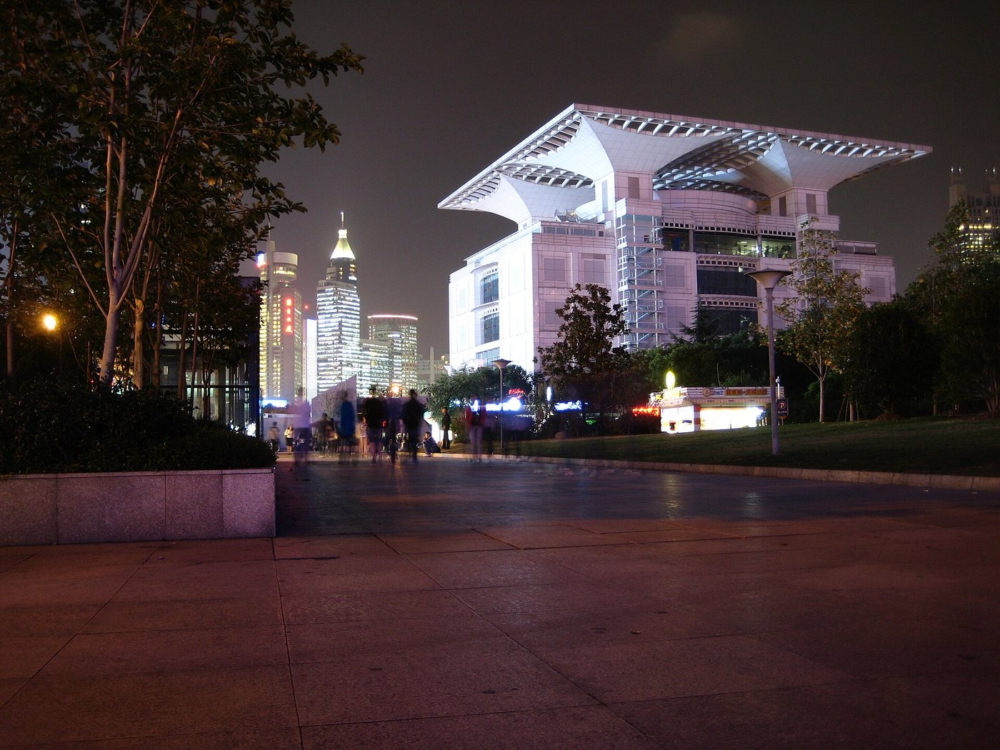
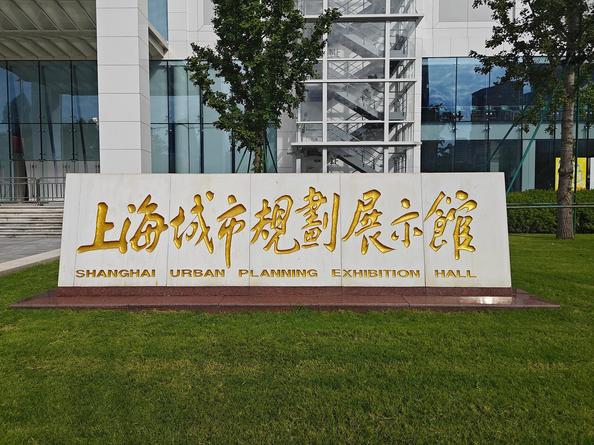

Shanghai Urban Planning Exhibition Center 上海城市规划展示馆
City planning museum · Huangpu
LikelyForeign booking unsure · 18 Nov 2026




Go if planning interests you; the old city model is gone. Free, WeChat booking compulsory; shut Wednesdays.
Foreign booking unsure
The evidence for this one has a gap. Check on the day or call ahead.
Why it matters
A free museum of how Shanghai plans and builds itself, useful if you work in planning or construction. It opened on 25 Feb 2000 as China's first city planning exhibition hall and reopened on 9 Aug 2022 around the Shanghai 2035 master plan. The model is gone, with only bits left (SmartShanghai, Aug 2022); a digital sandtable replaces it.
What to see
The main exhibit is the 5D digital sandtable on 3F: a curved screen showing all of Shanghai, where you pick a district and move through it with a joystick. The 1F foyer has a ring of screens and the six city master plans since 1931; 2F has models of urban renewal and the City Lab; 4F covers green planning and the Chongming eco-island.
How to get there
Show: 请带我去上海城市规划展示馆，人民大道100号。 Take the passport you booked with and keep the booking QR code open on your phone. There is no car park, so come by Metro or taxi.
Local tip
Book as soon as slots open, and check that the day you want can be booked.
Watch out
The booking runs in Chinese through WeChat, so book before you plan the day around it. The shut day is Wednesday, not Monday: a 2012 Time Out listing (Tue-Sun) is out of date.
What was checked, and what was not
Read on 18 Nov 2026
Sources read 18 Nov 2026: the centre's own site (undated) and the Shanghai government and city tourism pages for hours and the Wednesday closure; Tencent News (8 Aug 2022) and Bendibao (5 Jun 2023) for booking; The Paper (1 Mar 2022) for the floors; a Sep 2026 guide; OpenStreetMap.
Not checked
Whether an overseas WeChat account can finish the booking with a foreign passport; whether same-day booking exists; any notice for 24 to 30 Nov; English signs; security and bag rules.
Sources
- Official site, English page: hours, free entry, WeChat booking, exhibitions by floorsupec.org.cn Opens in a new tab
- Official site, Chinese home page: permanent exhibitions by floorsupec.org.cn Opens in a new tab
- Shanghai government English page, Shanghai Urban Planning Exhibition Hall (page date 25 Nov 2025)english.shanghai.gov.cn Opens in a new tab
- Shanghai Culture and Tourism, venue page (17 Apr 2025): address, hoursmeet-in-shanghai.net Opens in a new tab
- OpenStreetMap: Urban Planning Exhibition Center (position, address, hours tag, fee, phone)nominatim.openstreetmap.org Opens in a new tab
- Tencent News, 8 Aug 2022: reopening, mini-program booking rules, accepted IDnews.qq.com Opens in a new tab
- Shanghai Bendibao guide, 5 Jun 2023: booking rules, Metro exit, no parkingm.sh.bendibao.com Opens in a new tab
- Smart Shanghai, 12 Aug 2022: the big city model is gone, booking via WeChatsmartshanghai.com Opens in a new tab
- The Paper, 1 Mar 2022: floor-by-floor contents of the refitted centrem.thepaper.cn Opens in a new tab
- East China Trip guide, 22 Sep 2026: hours, passports, time neededeastchinatrip.com Opens in a new tab
- Time Out Shanghai listing, 2012 (out of date)timeoutshanghai.com Opens in a new tab